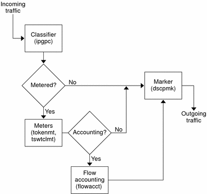

Previous
Previous
Marker (dscpmk and dlcosmk) Overview
In the Diffserv model, the marker marks a packet with a value that reflects a forwarding behavior. Marking is the process of placing a value in the packet's header to indicate how to forward the packet to the network. IPQoS contains two marker modules:
dscpmk - Marks the DS field in an IP packet header with a numeric value that is called the Differentiated Services codepoint, or DSCP. A Diffserv-aware router can then use the DS codepoint to apply the appropriate forwarding behavior to the packet.
dlcosmk - Marks the virtual local area network (VLAN) tag of an Ethernet frame header with a numeric value that is called the user priority. The user priority indicates the class of service (CoS), which defines the appropriate forwarding behavior to be applied to the datagram.
dlcosmk is an IPQoS addition that is not part of the Diffserv model, as designed by the IETF.
For information on implementing a marker strategy for the QoS policy, see How to Plan Forwarding Behavior.
Flow Accounting (flowacct) Overview
IPQoS adds the flowacct accounting module to the Diffserv model. You can use flowacct to gather statistics on traffic flows, and bill customers in agreement with their SLAs. Flow accounting is also useful for capacity planning and system monitoring.
The flowacct module works with the acctadm command to create an accounting log file. A basic log includes the IPQoS 5-tuple and two additional attributes, as shown in the following list:
Source address
Source port
Destination address
Destination port
Protocol number
Number of packets
Number of bytes
You can also gather statistics on other attributes, as described in Recording Information About Traffic Flows, and in the flowacct(7ipp) and acctadm(1M) man pages.
For information on planning a flow-accounting strategy, see How to Plan for Flow Accounting.
How Traffic Flows Through the IPQoS Modules
The next figure shows a path that incoming traffic might take through some of the IPQoS modules.
Figure 32-1 Traffic Flow Through the IPQoS Implementation of the Diffserv Model
This figure illustrates a common traffic flow sequence on an IPQoS-enabled machine:
The classifier selects from the packet stream all packets that match the filtering criteria in the system's QoS policy.
The selected packets are then evaluated for the next action to be taken.
The classifier sends to the marker any traffic that does not require flow control.
Traffic to be flow-controlled is sent to the meter.
The meter enforces the configured rate. Then, the meter assigns a traffic conformance value to the flow-controlled packets.
The flow-controlled packets are then evaluated to determine if any packets require accounting.
The meter sends to the marker any traffic that does not require flow accounting.
The flow-accounting module gathers statistics on received packets. The module then sends the packets to the marker.
The marker assigns a DS codepoint to the packet header. This DSCP indicates the per-hop behavior that a Diffserv-aware system must apply to the packet.
Traffic Forwarding on an IPQoS-Enabled Network
This section introduces the elements that are involved in forwarding packets on an IPQoS-enabled network. An IPQoS-enabled system handles any packets on the network stream with the system's IP address as the destination. The IPQoS system then applies its QoS policy to the packet to establish differentiated services.
DS Codepoint
The DS codepoint (DSCP) defines in the packet header the action that any Diffserv-aware system should take on a marked packet. The diffserv architecture defines a set of DS codepoints for the IPQoS-enabled system and diffserv router to use. The Diffserv architecture also defines a set of actions that are called forwarding behaviors, which correspond to the DSCPs. The IPQoS-enabled system marks the precedence bits of the DS field in the packet header with the DSCP. When a router receives a packet with a DSCP value, the router applies the forwarding behavior that is associated with that DSCP. The packet is then released onto the network.
Note - The dlcosmk marker does not use the DSCP. Rather, dlcosmk marks Ethernet frame headers with a CoS value. If you plan to configure IPQoS on a network that uses VLAN devices, refer to Marker Module.
Per-Hop Behaviors
In Diffserv terminology, the forwarding behavior that is assigned to a DSCP is called the per-hop behavior (PHB). The PHB defines the forwarding precedence that a marked packet receives in relation to other traffic on the Diffserv-aware system. This precedence ultimately determines whether the IPQoS-enabled system or Diffserv router forwards or drops the marked packet. For a forwarded packet, each Diffserv router that the packet encounters en route to its destination applies the same PHB. The exception is if another Diffserv system changes the DSCP. For more information on PHBs, refer to Using the dscpmk Marker for Forwarding Packets.
The goal of a PHB is to provide a specified amount of network resources to a class of traffic on the contiguous network. You can achieve this goal in the QoS policy. Define DSCPs that indicate the precedence levels for traffic classes when the traffic flows leave the IPQoS-enabled system. Precedences can range from high-precedence/low-drop probability to low-precedence/high-drop probability.
For example, your QoS policy can assign to one class of traffic a DSCP that guarantees a low-drop PHB. This traffic class then receives a low-drop precedence PHB from any Diffserv-aware router, which guarantees bandwidth to packets of this class. You can add to the QoS policy other DSCPs that assign varying levels of precedence to other traffic classes. The lower-precedence packets are given bandwidth by Diffserv systems in agreement with the priorities that are indicated in the packets' DSCPs.
IPQoS supports two types of forwarding behaviors, which are defined in the Diffserv architecture, expedited forwarding and assured forwarding.
Expedited Forwarding
The expedited forwarding (EF) per-hop behavior assures that any traffic class with EFs related DSCP is given highest priority. Traffic with an EF DSCP is not queued. EF provides low loss, latency, and jitter. The recommended DSCP for EF is 101110. A packet that is marked with 101110 receives guaranteed low-drop precedence as the packet traverses Diffserv-aware networks en route to its destination. Use the EF DSCP when assigning priority to customers or applications with a premium SLA.
Assured Forwarding
The assured forwarding (AF) per-hop behavior provides four different forwarding classes that you can assign to a packet. Every forwarding class provides three drop precedences, as shown in Table 37-2.
The various AF codepoints provide the ability to assign different levels of service to customers and applications. In the QoS policy, you can prioritize traffic and services on your network when you plan the QoS policy. You can then assign different AF levels to the prioritized traffic.